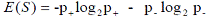
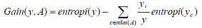
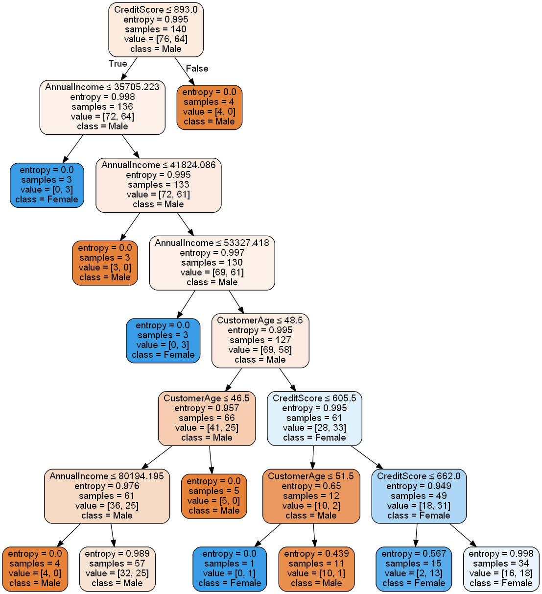

Modul3 Decision tree
PENJELASAN¶
Decision tree¶
Pohon keputusan yaitu pohon dalam analisis pemecahan masalah pengambilan keputusan mengenai pemetaan mengenai alternative - alternatif pemecahan masalah yang dapat diambil dari masalah tersebut. Pohon tersebut juga memperlihatkan factor - faktor kemungkinan/probablitas yang akan mempengaruhi alternative - alternatif keputusan tersebut, disertai dengan estimasi hasil akhir yang akan didapat bila kita mengambil alternatif keputusan tersebut.
Decision tree menggunakan struktur hierarki untuk pembelajaran supervised. Proses dari decision tree dimulai dari root node hingga leaf node yang dilakukan secara rekursif. Di mana setiap percabangan menyatakan suatu kondisi yang harus dipenuhi dan pada setiap ujung pohon menyatakan kelas dari suatu data.
Proses dalam pohon keputusan yaitu mengubah bentuk data (tabel) menjadi model pohon (tree) kemudian mengubah model pohon tersebut menjadi aturan (rule).Metode pohon keputusan digunakan untuk memperkirakan nilai diskret dari fungsi target yang mana fungsi pembelajaran direpresentasikan oleh sebuah pohon keputusan (decision tree). Pohon keputusan terdiri dari himpunan IF...THEN. Setiap path dalam tree dihubungkan dengan sebuah aturan, dimana premis terdiri atas sekumpulan node-node yang ditemui dan kesimpullannya dari aturan atas kelas yang terhubung dengan leaf node dari path.
Arsitektur Pohon Keputusan¶
Arsitektur pohon keputusan dibuat menyerupai bentuk pohon, dimana pada umumnya sebuah pohonterdapat akar (root), cabang dan daun (leaf).Pada pohon keputusan juga terdiri dari tiga bagian sebagai berikut :
A.Root node
Root node atau node akar merupakan node yang terletak paling atas dari suatu pohon.
B.Internal node
Internal Node ini merupakan node percabangan, dimana pada node ini hanyaterdapat satu input dan mempunyai minimal dua output.
C.Leaf node
Node ini merupakan node akhir, hanya memiliki satu input, dan tidak memiliki output.Pada pohon keputusan setiap leaf node menandai label kelas.
Pada pohon keputusan di setiap percabangan menyatakan kondisi yang harus dipenuhi dan tiap ujung pohon menyatakan nilai kelas data.Gambar berikut merupakan bentuk arsitektur pohon keputusan.

Lambang bulat pada pohon keputusan melambangkan node akar (root node) dan juga node cabang (internal node). Namun node akar selalu terletak paling atas tanpa memiliki input, sedangkan node cabang mempunyai input. Lambang kotak melambangkan node daun (leaf node). Setiap node daun berisi nilai atribut dari node cabang atau node akarnya.
Algoritma pohon keputusan¶
Salah satu algoritma induksi pohon keputusan yaitu ID3 (Iterative Dichotomiser 3). ID3 dikembangkan oleh J. Ross Quinlan. Dalam prosedur algoritma ID3, input berupa sampel training, label training dan atribut. Algoritma C4.5 merupakan pengembangan dari ID3. Sedangkan pada perangkat lunak open source WEKA mempunyai versi sendiri C4.5 yang dikenal sebagai J48.
Pohon dibangun dengan cara membagi data secara rekursif hingga tiap bagian terdiri dari data yang berasal dari kelas yang sama. Bentuk pemecahan (split) yang digunakan untuk membagi data tergantung dari jenis atribut yang digunakan dalam split. Algoritma C4.5 dapat menangani data numerik (kontinyu) dan diskret. Split untuk atribut numerik yaitu mengurutkan contoh berdasarkan atribut kontiyu A, kemudian membentuk minimum permulaan (threshold) M dari contoh-contoh yang ada dari kelas mayoritas pada setiap partisi yang bersebelahan, lalu menggabungkan partisi-partisi yang bersebelahan tersebut dengan kelas mayoritas yang sama. Split untuk atribut diskret A mempunyai bentuk value (A) ε X dimana X ⊂ domain(A).
Jika suatu set data mempunyai beberapa pengamatan dengan missing value yaitu record dengan beberapa nilai variabel tidak ada, Jika jumlah pengamatan terbatas maka atribut dengan missing value dapat diganti dengan nilai rata-rata dari variabel yang bersangkutan.[Santosa,2007]
Untuk melakukan pemisahan obyek (split) dilakukan tes terhadap atribut dengan mengukur tingkat ketidakmurnian pada sebuah simpul (node). Pada algoritma C.45 menggunakan rasio perolehan (gain ratio). Sebelum menghitung rasio perolehan, perlu menghitung dulu nilai informasi dalam satuan bits dari suatu kumpulan objek. Cara menghitungnya dilakukan dengan menggunakan konsep entropi.

S adalah ruang (data) sampel yang digunakan untuk pelatihan, *p+* adalah jumlah yang bersolusi positif atau mendukung pada data sampel untuk kriteria tertentu dan *p-* adalah jumlah yang bersolusi negatif atau tidak mendukung pada data sampel untuk kriteria tertentu. ntropi(*S*) sama dengan 0, jika semua contoh pada S berada dalam kelas yang sama. Entropi(S) sama dengan 1, jika jumlah contoh positif dan negative dalam S adalah sama. Entropi(S) lebih dari 0 tetapi kurang dari 1, jika jumlah contoh positif dan negative dalam S tidak sama [Mitchell,1997].Entropi split yang membagi *S* dengan *n* record menjadi himpunan-himpunan *S1* dengan *n1* baris dan *S2* dengan *n2* baris adalah :

Kemudian menghitung perolehan informasi dari output data atau variabel dependent y yang dikelompokkan berdasarkan atribut A, dinotasikan dengan gain (y,A). Perolehan informasi*, gain* (y,A), dari atribut A relative terhadap output data y adalah:

nilai (A) adalah semua nilai yang mungkin dari atribut A, dan y*c adalah subset dari y dimana A mempunyai nilai c. Term pertama dalam persamaan diatas adalah *entropy total y dan term kedua adalah entropy sesudah dilakukan pemisahan data berdasarkan atribut A.
Untuk menghitung rasio perolehan perlu diketahui suatu term baru yang disebut pemisahan informasi (SplitInfo). Pemisahan informasi dihitung dengan cara :

bahwa S1 sampai Sc adalah c subset yang dihasilkan dari pemecahan S dengan menggunakan atribut A yang mempunyai sebanyak c nilai. Selanjutnya rasio perolehan (gain ratio) dihitung dengan cara :
Kelebihan dan kekurangan pohon keputusan¶
Kelebihan Pohon Keputusan¶
•Daerah pengambilan keputusan yang sebelumnya kompleks dan sangat global, dapat diubahmenjadi lebih simpel dan spesifik.
•Eliminasi perhitungan-perhitungan yang tidak diperlukan, karena ketika menggunakanmetode pohon keputusan maka sample diuji hanya berdasarkan kriteria atau kelas tertentu.
•Fleksibel untuk memilih fitur dari internal node yang berbeda, fitur yang terpilih akanmembedakan suatu kriteria dibandingkan kriteria yang lain dalam node yang sama.Flefleksibelan metode pohon keputusan ini meningkatkan kualitas keputusan yang dihasilkan jika dibandingkan ketika menggunakan metode penghitungan satu tahap yang lebih konvensional.
•Dalam analisis multivariat, dengan kriteria dan kelas yang jumlahnya sangat banyak, seorangpenguji biasanya perlu untuk mengestimasikan baik itu distribusi dimensi tinggi ataupunparameter tertentu dari distribusi kelas tersebut. Metode pohon keputusan dapatmenghindari munculnya permasalahan ini dengan menggunakan criteria yang jumlahnyalebih sedikit pada setiap node internal tanpa banyak mengurangi kualitas keputusan yang dihasilkan.
Kekurangan Pohon Keputuan¶
•terjadi overlap terutama ketika kelas-kelas dan criteria yang digunakan jumlahnya sangat banyak. Hal tersebut juga dapat menyebabkan meningkatnya waktu pengambilan keputusandan jumlah memori yang diperlukan.
•Pengakumulasian jumlah eror dari setiap tingkat dalam sebuah pohon keputusan yang besar.
•Kesulitan dalam mendesain pohon keputusan yang optimal.
•Hasil kualitas keputusan yang didapatkan dari metode pohon keputusan sangat tergantungpada bagaimana pohon tersebut didesain.
Study kasus pohon keputusan pada data Shopping_CustomerData.csv menggunakan python¶
Sebagai contoh, saya akan menunjukkan cara kerja algoritma decision tree dengan dataset sampel dari Shopping_CustomerData.csv. Data ini bersumber dari link berikut:https://www.kaggle.com/bikram1505/shopping-data. Berikut ini merupakan langkah-langkah decision tree dalam pemrograman python:
Langkah 1: Import Libraries¶
Pada kasus ini , saya akan menggunakan library pandas,pydotplus dan graphviz
# Mendeklarasikan library import pandas as pd from sklearn.tree import DecisionTreeClassifier # Import Decision Tree Classifier from sklearn.model_selection import train_test_split # Import train_test_split function from sklearn import metrics #Import scikit-learn metrics module for accuracy calculation import numpy as np import pandas as pd import matplotlib.pyplot as plt from sklearn.tree import export_graphviz from sklearn.externals.six import StringIO from IPython.display import Image import pydotplus
Berikut cara instal library pandas,pydotplus graphviz yaitu dengan cara membuka cmd administrator lalu ketik:
pip install pandas pip install pydotplus pip install graphviz
Langkah 2: Menginput Data serta menentukan data test dan data train¶
Data yang digunakan yakni dataset sampel Shopping_CustomerData.csv. Dibawah ini adalah script untuk menginput data.
#import dataset data = pd.read_csv("Shopping_CustomerData.csv") x = data[['CustomerAge','AnnualIncome','CreditScore','SpendingScore']] y = data[['CustomerGender']] x_train, x_test, y_train, y_test = train_test_split(x, y, test_size=0.3,random_state =1) y_train
Langkah 3: Membuat objek classifer Decision Tree¶
# Membuat object classifier decision tree clf = DecisionTreeClassifier(criterion="entropy", max_depth=7)
Langkah 4:Data train decision tree¶
# Data Train Decision Tree clf.fit(x_train,y_train)
Langkah 5:Prediksi respons untuk dataset uji¶
#Prediksi respons untuk dataset uji predicted_y = clf.predict(x_test)
Langkah 6: Model Accuracy, seberapa sering penggolongnya benar?¶
# Model Accuracy, seberapa sering penggolongnya benar? print("Accuracy:",metrics.accuracy_score(y_test, predicted_y))
Langkah 7:Menampilkan secara visual pohon keputusan menggunakan graphviz¶
#Menampilkan secara visual pohon keputusan menggunakan graphviz feature_cols = ['CustomerAge','AnnualIncome','CreditScore','SpendingScore'] dot_data = StringIO() export_graphviz(clf, out_file=dot_data, filled=True, rounded=True, special_characters=True, feature_names = feature_cols,class_names=['Male','Female']) graph = pydotplus.graph_from_dot_data(dot_data.getvalue()) graph.write_png('Shopping_CustomerData.png') Image(graph.create_png())
Hasil output dari program diatas sebagai berikut:¶
